Un phénomène invisible, spontané, imprévisible pour un noyau seul — et pourtant parfaitement prévisible pour un milliard d'entre eux. Il est partout autour de toi, dans les roches, dans l'air, et dans ton propre corps.
Comprendre pourquoi certains noyaux se transforment tout seuls, ce qu'ils émettent en le faisant, et pourquoi personne ne peut dire quand.
« Radioactivité » est un mot que tu as déjà entendu — au journal, dans un film, à propos d'une centrale ou d'un accident. Aucune recherche : ce qui compte ici, c'est ce que tu as déjà, juste ou faux.
En cliquant, le reste de la page se floute : tu écris sans rien pouvoir recopier. Il n'y a pas de bonne réponse attendue à ce stade.
🎬 Rappels de seconde : les transformations nucléaires. Mets en pause dès que tu veux noter quelque chose.
Ces noyaux radioactifs sont instables car ils possèdent un excès de protons ou de neutrons, ce qui déséquilibre les forces qui maintiennent le noyau cohérent.
Les termes radionucléides ou radioisotopes sont également utilisés pour désigner un noyau radioactif — tu les rencontreras dans les documents.
Les noyaux radioactifs ne disparaissent pas, mais se transforment spontanément en un autre noyau, selon des réactions dont la connaissance n'est pas évaluée dans ce cours.
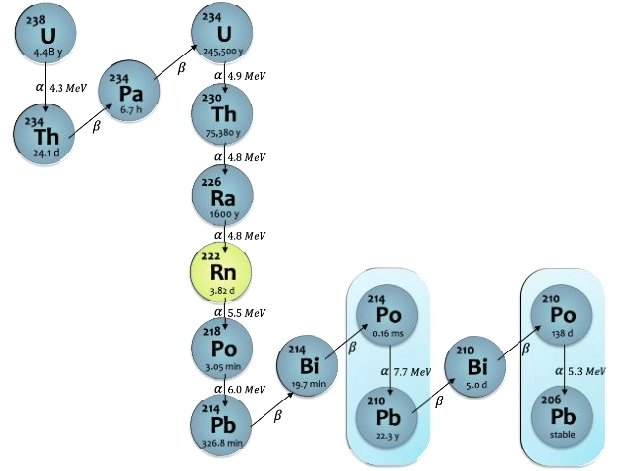
L'uranium 238 est un noyau instable car il contient un très grand nombre de protons et de neutrons, ce qui rend les forces de cohésion insuffisantes face aux répulsions électriques entre protons. Pour se stabiliser, il se désintègre progressivement en une série d'étapes (appelée cascade de désintégrations), jusqu'à devenir du plomb 206, un noyau stable.
Lorsqu'il se désintègre, le noyau père radioactif se transforme en noyau fils plus stable. Cette désintégration s'accompagne d'une émission de particules et d'une radiation.
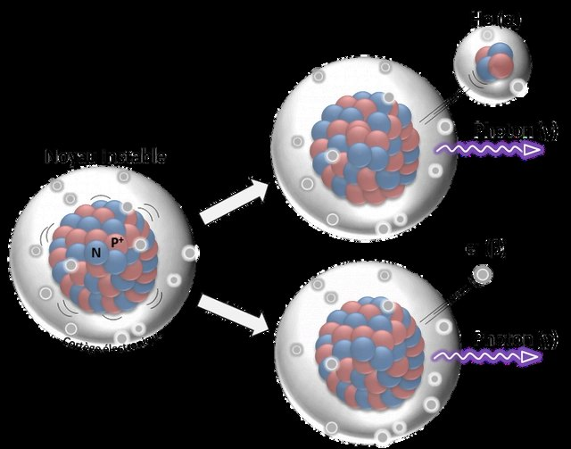
Sur l'image, la particule émise est soit un noyau d'hélium 42He, appelée particule α (radioactivité α), soit un électron e⁻ (radioactivité β⁻) ; alors qu'un rayonnement gamma γ est toujours émis.
Le tableau ci-dessous résume les trois rayonnements en une ligne chacun. Il ne figure pas tel quel dans le cours Quizéo, où l'information est dispersée entre la partie I et la partie II : c'est un regroupement, pas un ajout de notion.
| Rayonnement | Ce qui part du noyau | Ce que c'est |
|---|---|---|
| α (alpha) | 42He | un noyau d'hélium : 2 protons + 2 neutrons |
| β⁻ (bêta moins) | e⁻ | un électron |
| γ (gamma) | un rayonnement | pas de matière : de l'énergie, comme la lumière — toujours émis |
Voici une désintégration α, celle du radium 226. Touche une étiquette, puis touche le noyau qui lui correspond sur l'image. Pour corriger, touche le noyau : l'étiquette revient dans la réserve.
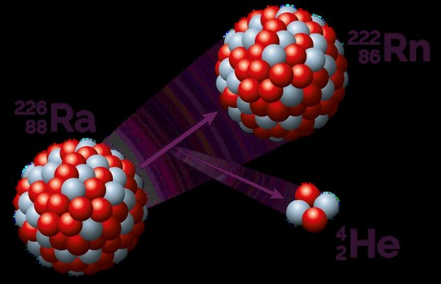
💡 Agrandis l'image si tu hésites : les nombres écrits à côté de chaque symbole te disent tout.
Ouvre l'animation, puis va dans l'onglet Atome seul. Une animation se lance.
▶ Ouvrir l'animation PhET (nouvel onglet)
Lance 5 autres simulations en cliquant sur le bouton Réinitialiser le noyau. Note les temps de désintégration à l'issue de chaque simulation — ils s'affichent dans la partie supérieure gauche de l'animation.
L'instant de désintégration d'un noyau radioactif individuel est aléatoire. Cependant, nous le verrons dans la suite de ce cours, il est tout à fait possible de prédire l'évolution d'un grand nombre de ces noyaux radioactifs.
Facultatif, jamais évalué — mais si tu as fini avant les autres, c'est là que ça devient intéressant.
🎬 Pourquoi certains noyaux tiennent et d'autres non : la carte des noyaux, et la vallée où ils cherchent tous à tomber.
L'IRSN — l'institut public français de recherche sur les risques nucléaires — décrit l'impact du polonium 210 sur l'organisme. Un émetteur α : inoffensif à l'extérieur du corps, redoutable à l'intérieur. Tu comprendras pourquoi en séance 2.
Sortir du noyau pour aller vers toi : d'où vient la radioactivité que tu reçois, combien tu en reçois vraiment, ce qu'elle fait au corps et comment on s'en protège.
🎬 Naturelle ou artificielle : d'où vient la radioactivité qui nous entoure.
La radioactivité est un phénomène naturel : des noyaux radioactifs formés lors des différentes étapes de la nucléosynthèse se désintègrent continûment dans les roches qui forment la croûte terrestre.
Certains noyaux radioactifs n'existent plus sur la Terre ; ils peuvent cependant être recréés artificiellement. Depuis le début du XXe siècle, les activités humaines ont entraîné la présence de radioactivité artificielle dans l'environnement, qui s'ajoute à la radioactivité naturellement présente.
La production de radionucléides artificiels se fait au moyen d'un accélérateur de particules ou d'un réacteur nucléaire. Certains servent de source de rayonnements pour des radiographies, ou de source d'irradiation pour des applications industrielles ou médicales (radiothérapie). D'autres, fortement radioactifs et actuellement inutilisés, constituent des déchets nucléaires devant être stockés sous haute surveillance.
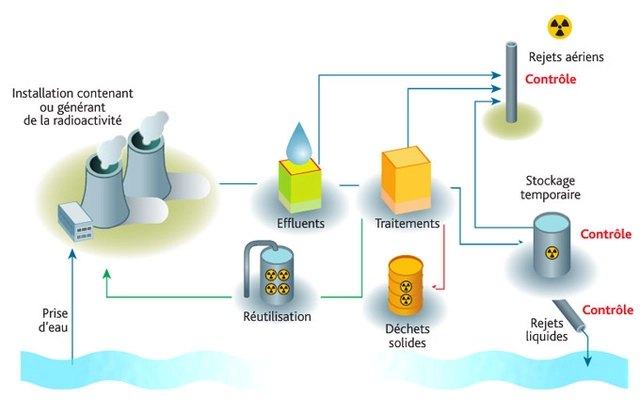
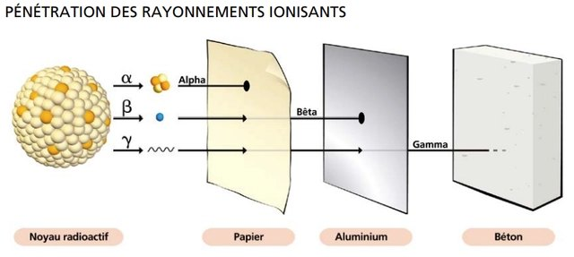
Les atomes radioactifs émettent trois types de rayonnement : alpha α, bêta β et gamma γ.
Le réseau REMon (Radioactivity Environmental Monitoring) publie en continu les mesures des balises de surveillance de toute l'Europe. Rejoins la carte, cherche Poitiers, et extrais la dose maximale reçue dans ta ville lors de la semaine écoulée.
🗺 Ouvrir la carte REMon (nouvel onglet)
La dose n'est pas directement donnée en Sv sur la carte interactive, mais en nSv/h. Il convient donc d'effectuer une conversion et de prendre en compte un intervalle de temps.
🎬 Aide — les puissances de 10 et les préfixes en physique-chimie.
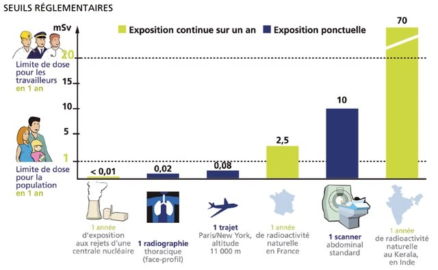
Attention, la radioactivité naturelle n'est pas la seule à prendre en compte lorsque l'on cherche à évaluer notre exposition personnelle.
🎬 D'où vient, concrètement, la dose que reçoit chacun d'entre nous ?
L'ASNR (Autorité de sûreté nucléaire et de radioprotection, service public français) met en ligne un questionnaire qui estime ton exposition annuelle. Complète-le, puis enregistre le résultat dans ton dossier numérique d'enseignement scientifique — ou imprime-le pour le conserver.
📊 Ouvrir ExPop — ASNR (nouvel onglet)
L'exposition à de fortes doses de radiations, mesurée en sievert (Sv), fragilise notre organisme et provoque de nombreux effets sur notre santé.
La réglementation française fixe à 1 millisievert (mSv) par an la dose efficace maximale admissible résultant des activités humaines, en dehors de la radioactivité naturelle et des doses reçues en médecine. Il s'agit de « doses corps entier ». Pour les expositions d'un organe ou d'un tissu, on considère les doses équivalentes : les limites pour le cristallin et pour la peau sont fixées respectivement à 15 mSv/an et 50 mSv/an. Source : LaRadioactivité.com
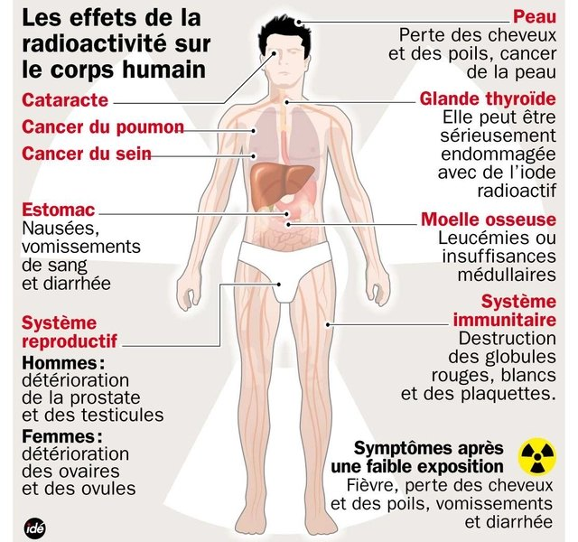
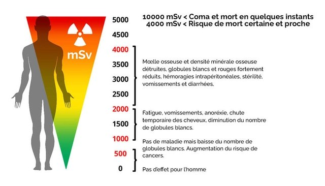
Les particules et radiations émises par la radioactivité peuvent être contenues. Certaines particules, comme la particule α, sont arrêtées par une simple feuille de papier ou une plaque métallique. Mais les rayonnements fortement ionisants, comme les rayonnements γ, traversent jusqu'au béton et ne sont arrêtés que par des protections en plomb.
Les professionnels de radiologie médicale réalisent des diagnostics (radiologie conventionnelle, scanographie, résonance magnétique, scintigraphie…) ou effectuent des traitements de radiothérapie. Ce personnel est exposé à des doses répétées de radiations ionisantes — plus fortes lorsqu'il se trouve à proximité du patient.
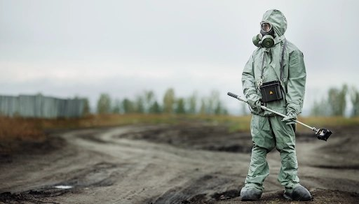
La protection passe par le collectif (vérification périodique des appareils, formation, délimitation et signalisation des zones d'émission, écrans de protection…) et par l'individuel (dosimétrie, surveillance médicale renforcée, port d'équipements de protection…).
🎬 Becquerel, gray, sievert : trois unités qu'on confond tout le temps, et qui ne mesurent pas la même chose.
🎬 Bilan 1 — L'exposition à la radioactivité.
🎬 Bilan 2 — La radioactivité expliquée en 3 minutes.
Passer du noyau seul, imprévisible, à la population de noyaux, parfaitement prévisible — et apprendre à lire une demi-vie sur une courbe.
D'un point de vue probabiliste, il n'est pas possible de prédire à quel instant un unique noyau radioactif va se désintégrer. En revanche, il est possible de déterminer la loi d'évolution globale du nombre de désintégrations dans un échantillon contenant un nombre important de noyaux radioactifs. C'est la loi de décroissance radioactive.
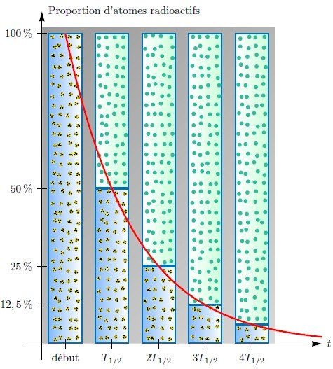
N'hésite pas à jouer avec la simulation. Lance-la en appuyant sur Simuler :
La loi de décroissance radioactive se modélise par une fonction exponentielle décroissante. Son expression exacte n'est pas à connaître ; les grandeurs qui la composent, si.
N(t) = N0 × e−λt
| Symbole | Ce que c'est |
|---|---|
| λ (lambda) | la constante radioactive du noyau — propre à chaque radionucléide |
| N0 | la population de noyaux au départ |
| e | une fonction mathématique, la fonction exponentielle — tu la trouves sur ta calculatrice |
| N(t) | le nombre de noyaux radioactifs à l'instant t |
λ est la constante de décroissance radioactive. C'est une valeur qui indique à quelle vitesse les noyaux se désintègrent :
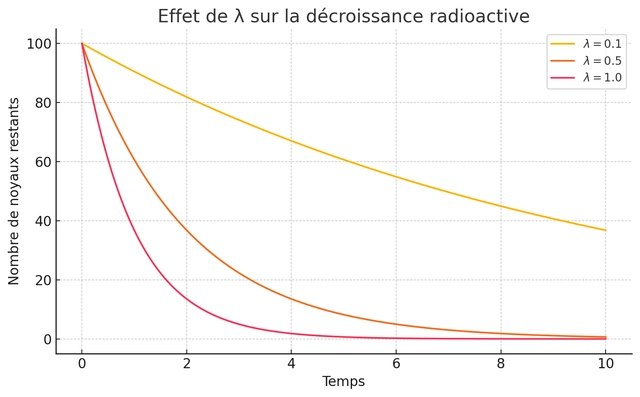
On ne peut pas prévoir quand un noyau se désintégrera. Mais si on connaît la demi-vie du noyau (qui dépend de sa nature), on peut calculer la probabilité que ce noyau a de se désintégrer dans les x prochaines minutes, semaines, années…
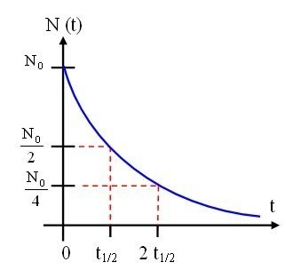
| Étape | Ce que tu fais |
|---|---|
| 1 | Regarde la valeur de départ, à t = 0 : c'est le nombre initial de noyaux N₀. Par exemple N₀ = 100. |
| 2 | Calcule la moitié de cette valeur. Si on commence avec 100, on cherche le moment où il en reste 50. |
| 3 | Repère sur la courbe le moment où le nombre de noyaux passe à la moitié : pars de 50 horizontalement jusqu'à couper la courbe, puis descends verticalement jusqu'à l'axe des temps. |
| 4 | Lis la valeur du temps : c'est le temps de demi-vie t1/2. |
🎬 Méthode graphique — déterminer la demi-vie d'un noyau radioactif.
Reviens sur l'animation PhET de la séance 1 et expérimente librement avec l'onglet Atomes multiples : cette fois, tu ne regardes plus un noyau, mais une population entière.
Rejoins l'animation, puis fixe la constante radioactive à λ = 0,5 s⁻¹. Si tu es sur tablette, tu ne peux pas modifier cette valeur : ce n'est pas grave, tu peux continuer.
▶ Ouvrir l'animation (ensciences.fr)
Le radium 226 est un isotope radioactif découvert par Marie et Pierre Curie en 1898. Il possède une demi-vie propre de 1 600 ans.
Dans les années 1910-1930, le radium fut massivement utilisé dans des peintures luminescentes pour les montres, les instruments de bord d'avion ou les cadrans de téléphone, car il émettait des radiations qui faisaient briller un composant phosphorescent.
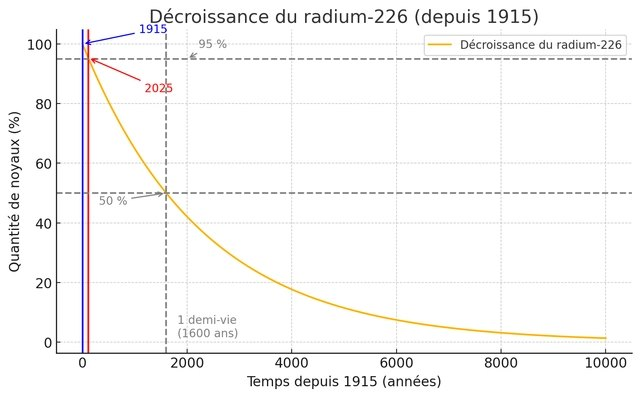
Certaines montres peintes au radium en 1915 peuvent théoriquement encore contenir près de 95 % du radium initial en 2025. Cela illustre que le noyau de radium « ignore » les siècles qui passent : il se désintègre selon sa propre horloge nucléaire.
Les ouvrières qui peignaient les cadrans au radium affinaient leur pinceau avec les lèvres. On leur avait dit que c'était sans danger. Ce que tu as appris en séance 2 sur les émetteurs α à l'intérieur du corps explique la suite — et leur procès a fondé une partie du droit du travail moderne.
🎬 L'histoire des Radium Girls.
Trois exercices pour se servir de tout ce qui précède : reconnaître un noyau à sa demi-vie, remonter le temps d'un échantillon, et estimer quand une zone contaminée redevient fréquentable.
| Noyau radioactif | Temps de demi-vie (années) |
|---|---|
| cobalt 60 | 5,2 |
| tritium | 12,2 |
| strontium 90 | 28,1 |
| césium 137 | 30 |
| américium 241 | 432 |
| radium 226 | 1 600 |
| carbone 14 | 5 730 |
| plutonium 239 | 24 110 |
| neptunium 237 | 2 140 000 |
| iode 129 | 15 700 000 |
| uranium 238 | 4 470 000 000 |
Consulte le tableau des demi-vies. Déplace le point A sur l'animation GeoGebra pour extraire des données de la courbe de décroissance radioactive.
Dans un échantillon, on comptabilise 2 milliards de noyaux radioactifs de radium 226. Combien cet échantillon en contenait-il il y a 1 600 ans ? Et il y a 9 600 ans ?
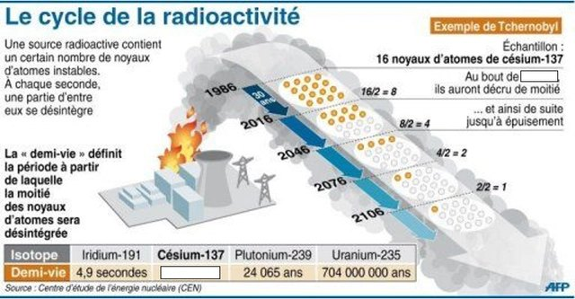
🎬 Du césium 137 radioactif dans le parc du Mercantour — quarante ans après, en France.
En considérant que les dangers liés au césium 137 deviennent négligeables à partir de 5 % de la quantité initiale, à partir de quelle année pourra-t-on considérer que la zone d'exclusion de Tchernobyl redevient sans risque majeur pour la santé humaine ?
Le bilan du chapitre en jeu, tous ensemble.
🎮 Ouvrir le Kahoot « Bilan — la radioactivité »